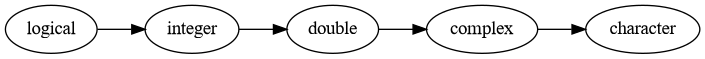

7 + 23 Introduction to R
This lesson provides an introduction to the R, a popular programming language for data science, and RStudio, an editor for R code.
Learning Goals
After this lesson, you should be able to:
- Define reproducible research and the role of programming languages
- Explain what R and RStudio are, how they relate to each other, and identify the purpose of the different RStudio panes
- Create and save a script file for later use; use comments to annotate
- Solve simple mathematical operations in R
- Create variables and data frames
- Inspect the contents of vectors in R and manipulate their content
- Identify the data type and class of an object and vector
- Subset and extract values from vectors
- Use the help function
3.1 Getting Started
3.1.1 What are R and RStudio?
- R is both a free and open source programming language designed for statistical computing and graphics, and the software for interpreting the code written in the R language.
- RStudio is an integrated development environment (IDE) within which you can write and execute code, and interact with the R software. It’s an interface for working with the R software that allows you to see your code, plots, variables, etc. all on one screen. This functionality can help you work with R, connect it with other tools, and manage your workspace and projects. You don’t need RStudio to use R, but many people find that using RStudio makes writing, editing, searching and running their code easier. You cannot run RStudio without having R installed. While RStudio is a commercial product, the free version is sufficient for most researchers.
3.1.2 Why Learn R?
There are many advantages to working with R:
- Scientific integrity. Working with a scripting language like R facilitates reproducible research. Having the commands for an analysis captured in code promotes transparency and reproducibility. Someone using your code and data should be able to exactly reproduce your analyses. An increasing number of research journals not only encourage, but are beginning to require, submission of code along with a manuscript.
- Many data types and sizes. R was designed for statistical computing and thus incorporates many data structures and types to facilitate analyses. It can also connect to local and cloud databases.
- Graphics. R has built-in plotting functionalities that allow you to adjust any aspect of your graph to effectively tell the story of your data.
- Open and cross-platform. Because R is free, open-source software that works across many different operating systems, anyone can inspect the source code, and report and fix bugs. It is supported by a large community of users and developers.
- Interdisciplinary and extensible. Because anyone can write and share R packages, it provides a framework for integrating approaches across domains, encouraging innovation.
3.2 Mathematical Operations
R runs as a read-evaluate-print loop, or REPL. This means:
- R waits until you type an expression (a single piece of code) and press
Enter, then reads and parses what you typed, checking whether it is a syntactically valid expression. - R evaluates the expression, computing the result.
- R prints the result in the R console.
- Finally, R loops back to step 1 to wait for your next expression.
You can use R like a calculator to see how it processes expressions:
R always puts the result on a separate line (or lines) from your code.
Note
In this case, the result begins with the tag [1], which is a hint from R that the result is a vector and that this line starts with the element at position 1. We’ll learn more about vectors later in this lesson, and eventually learn about other data types that are displayed differently.
If you enter an incomplete expression, R will get stuck at the evaluate step and change the prompt to +, then wait for you to type the rest of the expression and press the Enter key. If this happens, you can finish entering the expression on the new line, or you can cancel it by pressing the Esc key (or Ctrl + c if you’re using R without RStudio). R can only tell an expression is incomplete if it’s missing something that it is expecting, like the second operand here:
7 -Error in parse(text = input): <text>:2:0: unexpected end of input
1: 7 -
^Let’s do more math! Other arithmetic operators are:
-for subtraction*for multiplication/for division%%for remainder division (modulo)^or**for exponentiation
7 - 2
244/12
2 * 12Arithmetic in R follows an order of operations (aka PEMDAS): parenthesis, exponents, multiplication and division, addition and subtraction. You can combine these and use parentheses to make more complicated expressions, just as you would when writing a mathematical expression.
For example, to estimate the area of a circle with radius 3, you can write:
3.14 * 3^2[1] 28.26To see the complete order of operations, use the help command:
?SyntaxYou can also perform other operations in R:
3 > 1
3 < 1
Tip
You can write R expressions with any number of spaces (including none) around the operators and R will still compute the result. Nevertheless, putting spaces in your code makes it easier for you and others to read, so it’s good to make it a habit. Put spaces around most operators, after commas, and after keywords.
3.3 Variables
Since R is designed for mathematics and statistics, you might expect that it provides a better approximation for \(\pi\) than 3.14. R and most other programming languages allow you to create and store values called variables. Variables allow you to reuse the result of a computation, write general expressions (such as a*x + b), and break up your code into smaller steps so it’s easier to test and understand.
R has a built in variable called ‘pi’ for the value of \(\pi\). You can display a variable’s value by entering its name in the console:
piYou can also use variables in mathematical expressions. Here’s a more precise calculation of the area of a circle with radius 3:
pi *3^2You can define your own variables with the assignment operator ‘=’ or ‘<-’. Variable names can contain letters, numbers, dots ., and underscores _, but they cannot begin with a number. Spaces and other symbols are not allowed in variable names. In general, variable names should be descriptive but concise, and should not use the same name as common (base R) functions like mean, T, median, sum, etc..
Let’s make some more variables:
x <- 10
y <- 24
fantastic.variable2 = x
x <- y / 2In R, variables are copy-on-write. When we change a variable (“write”), R automatically copies the original value so dependent variables are unchanged until they are re-run.
x <- 13
y <- x
x <- 16
yWhy do you think copy-on-write is helpful? Where do you think it could trip you up?
3.4 Calling Functions
R has many functions (reusable commands) built-in that allow you to compute mathematical operations, statistics, and perform other computing tasks on your variables. You can think of a function as a machine that takes some inputs and uses them to produce some output. Code that uses a function is said to call that function. When you call a function, the values that you assign as input are called arguments. The output is called the return value.
We call a function by writing its name followed by a parentheses containing the arguments.
log(10)
sqrt(9)Many functions have multiple parameters and can accept multiple arguments. For example, the sum function accepts any number of arguments and adds them all together. When you call a function with multiple arguments, separate the arguments with commas.
sum(5, 4, 1)When you call a function, R assigns each argument to a parameter. Parameters are special variables that represent the inputs to a function and only exist while that function runs. For example, the log function, which computes a logarithm, has parameters x and base for the operand and base of the logarithm, respectively.
By default, R assigns arguments to parameters based on their order. The first argument is assigned to the function’s first parameter, the second to the second, and so on. If you know the order that a function expects to receive the parameters then you can list them separated by commas. Here the argument 64 is assigned to the parameter x, and the argument 2 is assigned to the parameter base.
log(64, 2)You can also assign arguments to parameters by name with = (but not with <-), overriding their positions.
log(64, base = 2)
log(base = 2, x= 64)
Tip
Both of these expressions are equivalent, so which one should you use? When you write code, choose whatever seems the clearest to you. Leaving parameter names out of calls saves typing, but including some or all of them can make the code easier to understand.
Not sure what parameters a specific function needs? Read on for how to get…
3.5 HELP!
This is just the beginning, and there are lots of resources to help you learn more. R has built-in help files that can be accessed with the ? and help commands. You can also search within the help documentation using the ?? command. There’s also a vibrant online help community. Here are some examples of how you can use all this help to help yourself:
? The help pages for all of R’s built-in functions usually have the same name as the function itself. Function help pages usually include a brief description, a list of parameters, a description of the return value, and some examples. To open the help page for the log function:
?logThere are also help pages for other topics, such as built-in mathematical constants (such as ?pi), data sets (such as ?cars), and operators. To look up the help page for an operator, put the operator’s name in single or double quotes. For example, this code opens the help page for the arithmetic operators:
?"+"
Tip
It’s always okay to put single or double quotes around the name of the page when you use ?, but they’re only required if it contains arithmetic commands or non-alphabetic characters. So ?sqrt, ?'sqrt', and ?"sqrt" all open the documentation for sqrt, the square root function. Why does this work? R treats anything inside single or double quotes as literal text rather than as an expression to evaluate.
In programming jargon, a piece of literal text is called a string. You can use whichever kind of quotes you prefer, but the quote at the beginning of the string must match the quote at the end. We’ll learn more about strings in later lessons when we cover working with unstructured data.
?? Sometimes you might not know the name of the help page you want to look up. You can do a general search of R’s help pages with ?? followed by a string of search terms. For example, to get a list of all help pages related to linear models:
??"linear model"This search function doesn’t always work well, and it’s often more efficient to use an online search engine. When you search for help with R online, include “R” as a search term. Alternatively, you can use RSeek, which restricts the search to a selection of R-related websites.
In later lessons we’ll learn about packages, which are sharable bundles of code. You’ll often need to look up the documentation to get help figuring out how to work with a new package. You can view a package’s help documentation using packageDescription("Name").
3.5.1 When Something Goes Wrong (and it will)
Sooner or later you’ll run some code and get an error message or result you didn’t expect. Don’t panic! Even experienced programmers make mistakes regularly, so learning how to diagnose and fix problems is vital. We call this troubleshooting or debugging.
Stay calm and try going through these steps:
- If R returned a warning or error message, read it! If you’re not sure what the message means, try searching for it online.
- Check your code for typ0s. Did you capitalize something that should be lower case? Are you missing or have an extra comma, quote, parenthesis?
- Test your code one line at a time, starting from the beginning. After each line that assigns a variable, check that the value of the variable is what you expect. Try to determine the exact line where the problem originates (which may differ from the line that emits an error!). Sometimes the “shut it down and restart” trick really works—you might have created a variable and forgot about it, and you need a fresh start for the code to work as intended.
If all else fails, just Google it. Stack Overflow is a popular question and answer website and you can often find solutions to your problems there, or pick up tips to help you tackle your problem in a new way. On CRAN, check out the Intro to R Manual and R FAQ. Many regions also have grassroots R-Users Groups that you can join and ask for help. Just remember to pay it forward and use your new found R prowess to help others in the community on their learning journeys!
Tip
When asking for help, clearly state the problem and provide a reproducible example. Take a look at StackOverflow’s How do I ask a good question? guide and R’s Posting guide before you write your first question. These guides will help you write questions that are more likely to get a useful reply.
It’s also a good idea to save your sessionInfo() so you can show others how your machine and session was configured. Doing this before coming to office hours for a programming class is also highly recommended!
3.6 Vectors
A vector is an ordered collection of values. The values in a vector are called elements. Vectors can have any number of elements, including 0 or 1 element. For example, a single value, like 3, is a vector with 1 element. So every value that you’ve worked with in R so far was a vector.
The elements of a vector must all be the same type of data (we say the elements are homogeneous). A vector can contain integers, decimal numbers, strings (text), or several other types of data, but not a mix these all at once.
You can combine or concatenate vectors to create a longer vector with the c function:
# numbers
time.min <- c(5, 4, 4, 12, 10, 2, 3, 4, 4, 5, 19)
# strings
pets <- c("woof", "woof", "cat", "woof", "woof", "cat", "woof", "woof", "woof",
"woof", "woof")
place <- c("Temple", "Yakitori", "Panera", "Yakitori", "Guads", "Home",
"Tea List", "Raising Canes", "Pachamama", "Lazi Cow", "Wok of Flame")You can check the length of a vector (and other objects) with the length function:
length(3)[1] 1length("hello")[1] 1length(time.min)[1] 11length(pets)[1] 113.6.1 Indexing Vectors
Vectors are ordered, which just means the elements have specific positions. For example, in the place vector, the value of the 1st element is "Temple", the 2nd is "Yakitori", the 5th is "Guads", and so on.
You can access individual elements of a vector with the indexing operator [ (also called the square bracket operator). The way to write it, or syntax is:
VECTOR[INDEXES]Here INDEXES is a vector of positions of elements you want to get or set.
For example, let’s get the 2nd element of the place vector:
place[2][1] "Yakitori"Now let’s get the 3rd and 1st element:
place[c(3, 1)][1] "Panera" "Temple"Indexing is among the most frequently used operations in R, so take some time to try it out with few different vectors and indexes. We’ll revisit indexing in a later lesson to learn a lot more about it.
3.6.2 Vectorization
Let’s look at what happens if we call a mathematical function, like sqrt, on a vector:
x <- c(2, 16, 4, 7)
sqrt(x)[1] 1.414214 4.000000 2.000000 2.645751This gives us the same result as if we had called the function separately on each element. That is, the result is the same as:
c(sqrt(2), sqrt(16), sqrt(4), sqrt(7))[1] 1.414214 4.000000 2.000000 2.645751Of course, the first version is much easier to type.
Functions that take a vector argument and get applied element-by-element are called vectorized functions. Most functions in R are vectorized, especially math functions. Some examples include sin, cos, tan, log, exp, and sqrt.
A function can be vectorized across multiple arguments. This is easiest to understand in terms of the arithmetic operators. Let’s see what happens if we add two vectors together:
x = c(1, 2, 3, 4)
y = c(-1, 7, 10, -10)
x + y[1] 0 9 13 -6The elements are paired up and added according to their positions. The other arithmetic operators are also vectorized:
x - y[1] 2 -5 -7 14x * y[1] -1 14 30 -40x / y[1] -1.0000000 0.2857143 0.3000000 -0.4000000Note that if you are trying to run vectorized operations on vectors of different lengths, the values of the shorter vector will be recycled. For example, if we create a vector z with only three values, and try to add it to x, which has four values, we get the following result.
z = c(-1, 7, 10)
x + zWarning in x + z: longer object length is not a multiple of shorter object
length[1] 0 9 13 3First, we get a warning, which lets us know that these vectors are not the same length. But we still get a result, which manages to make a calculation for the fourth value. To get this fourth value, R recycles the shorter vector z by going back to its first element, -1, and using that to add to the fourth element in x (4). Thus our result is x[4] + z[1] = 4 (or -1 + 3 = 4). This is something to be cautious of, because if values are recycled inadvertently, we’ll have errors in our results.
Functions that are not vectorized tend to be ones that combine or aggregate values in some way. For instance, the sum, length, and class functions are not vectorized.
3.7 Data Frames
We frequently work with 2-dimensional tables of data (also called tabular data). Typically each row corresponds to a single subject and is called an observation. Each column corresponds to a measurement of the subject.
In data science, the columns of a table are called features or covariates. Sometimes people also refer to them as “variables”, but that can be confusing as “variable” means something else in R, so here we’ll try to avoid that term.
R’s structure for tabular data is the data frame. The columns are vectors, so the elements within a column must all be the same type of data. In a data frame, every column must have the same number of elements (so the table is rectangular). There are no restrictions on the data types in each row.
You can use the data.frame function to create a data frame from column vectors:
# current data (vectors)
time.min
place
pets
# create new data (vectors)
distance.mi <- c(0.9, 0.6, 0.8, 0.6, 2, 100, 0.6, 0.7, 0.8, 1, 3.7)
major <- c("chicanix studies", "human development", "economics", "undeclared",
"psychology", "MMM", "psychology", "undeclared", "human development",
"undeclared", "GG")
# combine vectors into dataframe
my.data <- data.frame(place, distance.mi, time.min, major, pets)3.7.1 Selecting Columns
You can select an individual column from a data frame by name with $, the dollar sign operator. The syntax is:
VARIABLE$COLUMN_NAMEFor instance, to select the place column:
my.data$place [1] "Temple" "Yakitori" "Panera" "Yakitori"
[5] "Guads" "Home" "Tea List" "Raising Canes"
[9] "Pachamama" "Lazi Cow" "Wok of Flame" The selected column is just a vector, so you can assign it to a variable and use it in functions. For example, to compute the sum of the distance.mi column:
sum(my.data$distance.mi)[1] 111.7
Note
Preview of future lesson content: what if you want to extract a row from your data frame?
For example, to pull out all responses from only the 11th row, you would subset it:
my.data[11, ]3.7.2 Inspecting Data
You can print a small dataset, but it can be slow and hard to read especially if there are a lot of columns. R has many built in functions to inspect objects:
| Expression | Description |
|---|---|
head |
Get only the beginning of the data set. |
tail |
Get only the end of the data set. |
nrow |
Get the number of rows. |
ncol |
Get the number of columns. |
ls |
Get the names of the columns in alphabetical order. |
names |
Get the names of the columns in their actual order. |
rownames |
Get the names of the rows. |
A highly informative function for inspecting the structure of a data frame or other object is str:
str(my.data)The table function is another useful function for inspecting data. The table function computes the frequency of each unique value in a vector. For instance, you can use table to compute how many entries in the pets column are woof:
table(my.data$pets)
cat woof
2 9
See also
Check out DataLab’s Keeping Your Data Tidy workshop, which covers best practices for structuring, naming, and organizing your data frames (and spreadsheets).
3.8 Data Types & Classes
Data can be categorized into different types based on sets of shared characteristics. For instance, statisticians tend to think about whether data are numeric or categorical:
- numeric
- continuous (real or complex numbers)
- discrete (integers)
- categorical
- nominal (categories with no ordering)
- ordinal (categories with some ordering)
Of course, other types of data, like graphs (networks) and natural language (books, speech, and so on), are also possible. Categorizing data this way is useful for reasoning about which methods to apply to which data.
In R, data objects are categorized in two different ways:
The class of an R object describes what the object does, or the role that it plays. Sometimes objects can do more than one thing, so objects can have more than one class. The
classfunction returns the classes of its argument.The type of an R object describes what the object is. Technically, the type corresponds to how the object is stored in your computer’s memory. Each object has exactly one type. The
typeoffunction returns the type of its argument.
Of the two, classes tend to be more important than types. If you aren’t sure what an object is, checking its classes should be the first thing you do.
The built-in classes you’ll use all the time correspond to vectors and lists (which we’ll learn more about in Section 3.8.1):
| Class | Example | Description |
|---|---|---|
| logical | TRUE, FALSE |
Logical (or Boolean) values |
| integer | -1L, 1L, 2L |
Integer numbers |
| numeric | -2.1, 7, 34.2 |
Real numbers |
| complex | 3-2i, -8+0i |
Complex numbers |
| character | "hi", "YAY" |
Text strings |
| list | list(TRUE, 1, "hi") |
Ordered collection of heterogeneous elements |
The class of a vector is the same as the class of its elements:
class("hi")[1] "character"class(c("hello", "hi"))[1] "character"In addition, for ordinary vectors, the class and the type are the same:
x <- c(TRUE, FALSE)
class(x)[1] "logical"typeof(x)[1] "logical"The exception to this rule is numeric vectors, which have type double for historical reasons:
class(pi)[1] "numeric"typeof(pi)[1] "double"typeof(3)[1] "double"The word “double” here stands for double-precision floating point number, a standard way to represent real numbers on computers.
By default, R assumes any numbers you enter in code are numeric, even if they’re integer-valued.
The class integer also represents integer numbers, but it’s not used as often as numeric. A few functions, such as the sequence operator : and the length function, return integers. The difference between numeric and integer is generally not important.
class(3)[1] "numeric"class(length(pets))[1] "integer"class(1:3)[1] "integer"Besides the classes for vectors and lists, there are several built-in classes that represent more sophisticated data structures:
| Class | Description |
|---|---|
| function | Functions |
| factor | Categorical values |
| matrix | Two-dimensional ordered collection of homogeneous elements |
| array | Multi-dimensional ordered collection of homogeneous elements |
| data.frame | Data frames |
For these, the class is usually different from the type. We’ll learn more about most of these later on.
3.8.1 Lists
A list is an ordered data structure where the elements can have different types (they are heterogeneous). This differs from a vector, where the elements all have to have the same type, as we saw in Section 3.6. The tradeoff is that most vectorized functions do not work with lists.
You can make an ordinary list with the list function:
x <- list(1, c("hi", "bye"))
class(x)[1] "list"typeof(x)[1] "list"For ordinary lists, the type and the class are both list. In a later lesson, we’ll learn how to get and set list elements, and more about when and why to use lists.
You’ve already seen one list, the my.data data frame:
class(my.data)[1] "data.frame"typeof(my.data)[1] "list"Under the hood, data frames are lists, and each column is a list element. Because the class is data.frame rather than list, R treats data frames differently from ordinary lists. For example, R prints data frames differently from ordinary lists.
3.8.2 Implicit Coercion
R’s types fall into a natural hierarchy of expressiveness:

Each type on the right is more expressive than the ones to its left.
For example, with the convention that FALSE is 0 and TRUE is 1, we can represent any logical value as an integer. In turn, we can represent any integer as a double, and any double as a complex number. By writing the number out, we can also represent any complex number as a string.
The point is that no information is lost as we follow the arrows from left to right along the types in the hierarchy. In fact, R will automatically and silently convert from types on the left to types on the right as needed. This is called implicit coercion.
As an example, consider what happens if we add a logical value to a number:
TRUE + 2[1] 3R automatically converts the TRUE to the numeric value 1, and then carries out the arithmetic as usual.
We’ve already seen implicit coercion at work once before, when we learned the c function. Since the elements of a vector all have to have the same type, if you pass several different types to c, then R tries to use implicit coercion to make them the same:
x <- c(TRUE, "hi", 1, 1+3i)
class(x)[1] "character"x[1] "TRUE" "hi" "1" "1+3i"Implicit coercion is strictly one-way; it never occurs in the other direction. If you want to coerce a type on the right to one on the left, you can do it explicitly with one of the as.TYPE functions. For instance, the as.numeric (or as.double) function coerces to numeric:
as.numeric("3.1")[1] 3.1There are a few types that fall outside of the hierarchy entirely, like functions. Implicit coercion doesn’t apply to these. If you try to use these types where it doesn’t make sense to, R generally returns an error:
sin + 3Error in sin + 3: non-numeric argument to binary operatorIf you try to use these types as elements of a vector, you get back a list instead:
x <- c(1, 2, sum)
class(x)[1] "list"Understanding how implicit coercion works will help you avoid bugs, and can also be a time-saver.